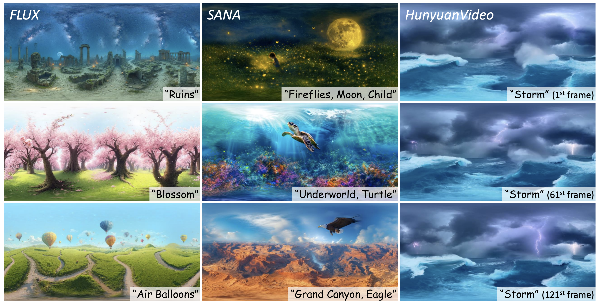
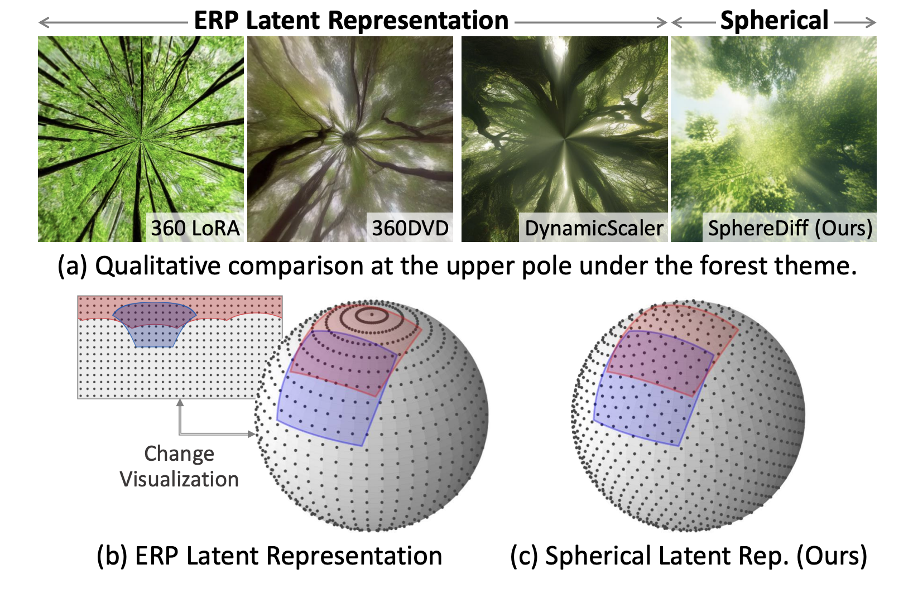
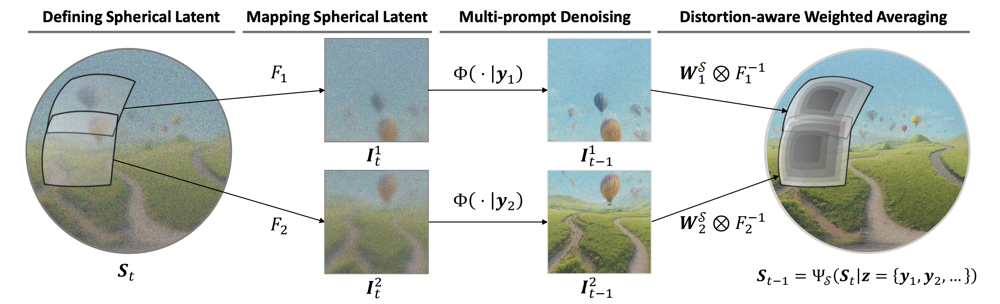
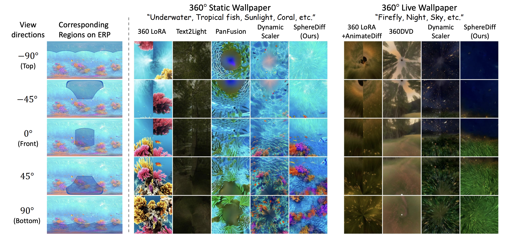
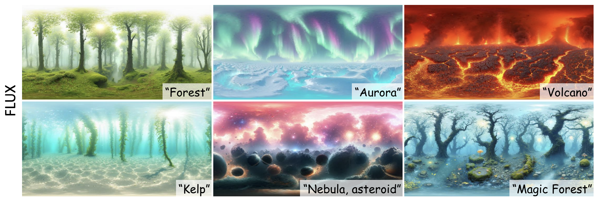
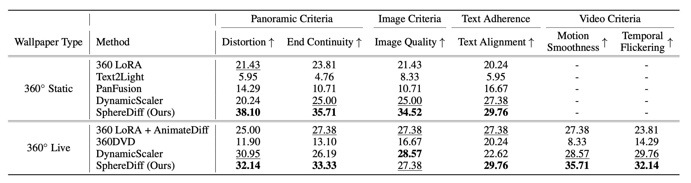
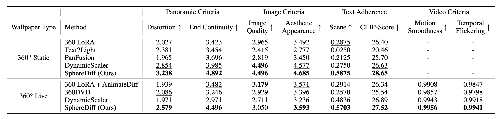

The increasing demand for AR/VR applications has highlighted the need for high-quality 360-degree panoramic content. However, generating high-quality 360-degree panoramic images and videos remains a challenging task due to the severe distortions introduced by equirectangular projection (ERP). Existing approaches either fine-tune pretrained diffusion models on limited ERP datasets or attempt tuning-free methods that still rely on ERP latent representations, leading to discontinuities near the poles. In this paper, we introduce SphereDiff, a novel approach for seamless 360-degree panoramic image and video generation using state-of-the-art diffusion models without additional tuning. We define a spherical latent representation that ensures uniform distribution across all perspectives, mitigating the distortions inherent in ERP. We extend MultiDiffusion to spherical latent space and propose a spherical latent sampling method to enable direct use of pretrained diffusion models. Moreover, we introduce distortion-aware weighted averaging to further improve the generation quality in the projection process. Our method outperforms existing approaches in generating 360-degree panoramic content while maintaining high fidelity, making it a robust solution for immersive AR/VR applications.



Additional comparison

Additional results

User study results. The 360◦ static and live wallpapers generated by SphereDiff have achieved state-of-the-art performance in user preference across most metrics, particularly in panoramic criteria such as distortion and end continuity.

Automated Quantitative Evaluation. SphereDiff consistently outperforms existing methods except image quality, where it ranks second.
